硅谷的道德算法与权力托管 从有效利他主义到万亿级AI公司的治理实验
从1972年牛津的一个伦理思想实验，到2026年万亿级AI企业的治理机制：当善意可以被计算，当技术权力可以买下千亿美元算力，谁来监督作出决定的人？
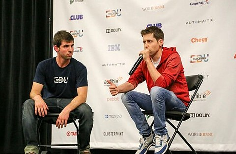
一家由非营利机构控制的人工智能公司，突然宣布解除首席执行官职务。几天后，这一决定被逆转。
这场OpenAI董事会危机令人看到，写在公司章程里的权力，与人才、资本和组织实际上愿意服从的权力，并不是一回事。两个月前，另一家实验室Anthropic刚刚公开其长期利益信托，试图用不同的法律结构处理类似难题。
而在半个世纪以前的牛津，彼得·辛格提出的却是一个极其朴素的伦理问题：如果我们有能力救人，距离能够成为不施救的理由吗？
从一名溺水儿童，到未来世代的生命价值；从防疟蚊帐、亿万富豪的捐赠，再到前沿模型、巨额算力合同与董事会投票——这条思想与资本的交汇线，正是本专题要追踪的故事。
贯穿全文的四个问题
从功利主义、人口伦理及慈善资本，到FTX、OpenAI和Anthropic治理制度、算力承诺与公共监管，建立可证伪的托管人悖论及AI资本周期框架。
从一名溺水儿童，到尚未出生的亿万人
一个伦理问题如何变成可计算的慈善，再走向对遥远未来的治理。
1972 · 一个道德问题如果一个孩子正在溺水
1971年秋，东巴基斯坦（今孟加拉国）因战争爆发严重的难民与饥荒危机。次年（1972年），当时年仅25岁、在牛津任教的澳大利亚哲学家彼得·辛格（Peter Singer）在《哲学与公共事务》（Philosophy & Public Affairs）发表了极具影响力的论文《饥荒、富裕与道德》（Famine, Affluence, and Morality）（来源 S05）。
这篇论文的直接历史背景是东孟加拉难民危机，而非后来由慈善评估机构主导的非洲防疟蚊帐项目（来源 S05）。辛格在文中提出了著名的"溺水儿童"思想实验：如果一个人路过浅池塘，看到孩子正在溺水，即便下水救人会弄脏昂贵的衣物，依然负有道德义务施救；
那么，仅仅因为处于生死边缘的受助者身处万里之外，富裕社会个体的道德义务是否就会因此消失？
半个世纪后，脱胎于这一应用伦理学与证据导向慈善脉络的有效利他主义（Effective Altruism，简称 EA），演化成为当代欧美精英群体中颇具影响力的社会运动与资源配置方法论。
它既持续推动着发展中国家的全球健康与减贫项目，也在过去十余年间深度介入了通用人工智能（AGI）的治理架构讨论，参与塑造了 OpenAI 与 Anthropic 两家超大规模前沿实验室的制度设计尝试。
要客观剖析 EA 在硅谷科技治理中的作用与边界，必须首先厘清它的思想源流、多轨并存的真实结构，以及其核心量化模型在哲学层面无法逾越的授权盲点。
思想的来路三种哲学传统，三道不同的题
在思想史脉络上，EA 的核心发源地集中于牛津、剑桥以及美国东海岸和加州湾区，其方法论深受英美分析哲学与功利主义传统滋养。但需要明确界定的是：英美与欧陆哲学传统并非整齐划一的地理二分，EA 也绝不等同于"极端功利主义"——正如 EA 官方定义所强调的，它本质上是一套以证据与理性寻找最大化行善路径的研究方法与社会运动，并未要求所有参与者接受同一种规范伦理学理论（来源 S01）。
在严谨的学术讨论中，必须将功利主义（Utilitarianism）、后果主义（Consequentialism）、长期主义（Longtermism）、理性主义社区（Rationalism）以及 EA 组织成员身份清晰区隔，不可混为一谈。
具体而言，塑造 EA 方法论底色的三大关键哲学支点如下：
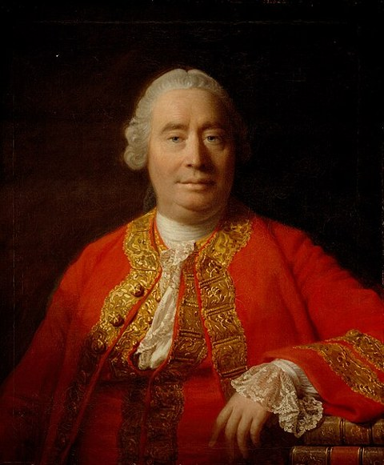
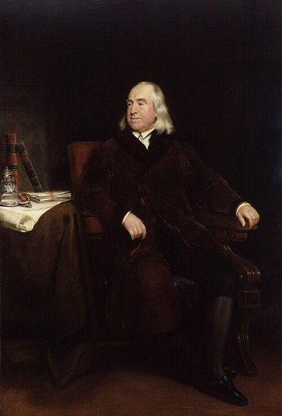
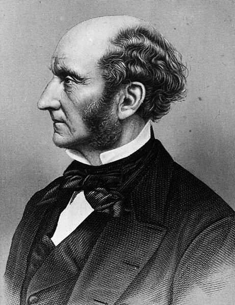
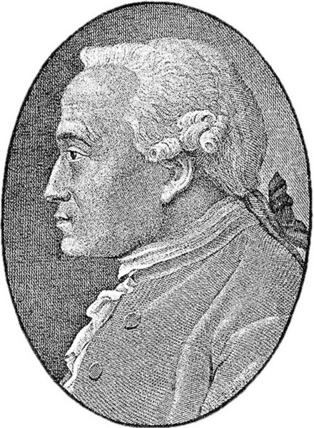
边沁与密尔的功利主义及应用伦理：杰里米·边沁（Jeremy Bentham）与约翰·斯图亚特·密尔（John Stuart Mill）奠定了以可比较的福祉净产出评估行为优劣的后果主义传统，与康德强调不可违背绝对律令的义务论（Deontology）形成鲜明对比。在现代慈善实践中，这一传统演化为对善款边际效率的量化追踪。
德里克·帕菲特（Derek Parfit）的人口伦理：在牛津哲学内部，连接"当下慈善"与"遥远未来"的关键学术节点，是德里克·帕菲特于1984年出版的《理与人》（Reasons and Persons）。
帕菲特在书中比较了三种结局：（1）世界和平；（2）造成地球 99% 人口死亡的核战争；（3）造成 100% 人口灭绝的核战争。帕菲特指出，从未来文明潜能的损失来看，（3）与（2）之间的道德落差可能远大于（2）与（1）之间的落差——因为 1% 的幸存者仍可能重建文明，而彻底灭绝将永久抹去未来世代的一切存在。
这一人口伦理命题为后来的"生存风险（Existential Risk）"研究奠定了理论入口。
2007—2022 · 量化行善从哲学系走进慈善账本
为了便于读者理解 EA 过去近二十年的议题重心扩展，本报告使用作者自定义的阶段性标签，将早期聚焦全球健康与减贫效率的实践称为"证据慈善主线（分析简称 EA 1.0）"，将2010年代中期以后在牛津与湾区迅速壮大的生存风险与长期主义思潮称为"长期未来主线（分析简称 EA 2.0）"。
但必须声明：这并非公认的学术分期，更不能误读为"长期主义全面替代或吞噬了全球健康慈善"。 事实上，全球健康与减贫、动物福利以及长期未来（含 AI 安全与生物安全）长期在 EA 生态内多轨并存（来源 S01–S03）。
一美元能产生多少社会价值？
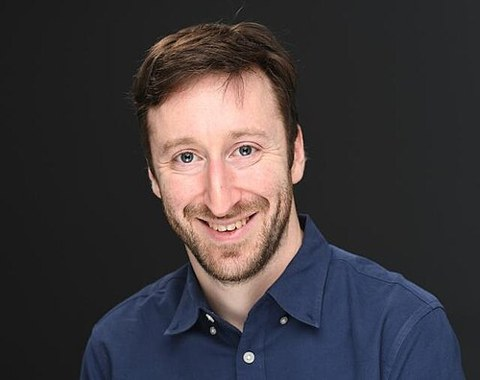
2006–2007年，原桥水基金（Bridgewater Associates）分析师霍尔登·卡诺夫斯基（Holden Karnofsky）与伊莱·哈森菲尔德（Elie Hassenfeld）发起并正式创办慈善评估机构 GiveWell，引入发展经济学的随机对照试验（RCT）与成本效益模型，评估慈善机构每单位资金的边际社会产出。
在引用 GiveWell 影响力数据时，必须严格恪守统计口径与时间范围，绝不可将不同年份、不同覆盖范围的累计捐款与模型估算救命人数随意相除，更不能将模型估算的"预期挽救生命数"误表述为逐一观测的"直接实际挽救生命数"（来源 S06–S09）：
历史累计口径：根据 GiveWell 官方首页指标出处（来源 S08），截至2026年9月，GiveWell 累计引导资金已超过 35亿美元；截至2026年2月，累计覆盖超过 16万名捐赠者。（历史FAQ曾报告26亿美元和约34万条预期挽救的生命，统计范围不同，不宜直接比较。）
最新年度口径：根据 GiveWell 2025年度影响报告（来源 S09），2025指标年度 GiveWell 引导资金 4.27亿美元，按其影响估算方法模型（来源 S07）预计可额外挽救约 8.6万条生命。
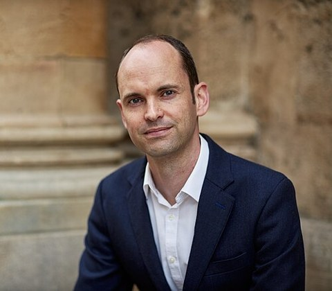
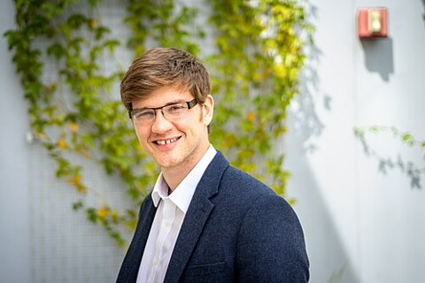
与此同时，大西洋彼岸的牛津大学哲学家托比·奥德（Toby Ord）于2009年发起 Giving What We Can，倡导公开承诺将至少10%的终身收入捐给高效慈善机构；
苏格兰裔牛津哲学家威廉·麦卡斯基尔（William MacAskill）于2011年联合创立职业规划组织 80,000 Hours，探索如何通过约8万小时的职业生涯最大化积极社会影响。
该阶段凝练出了经典的资源配置筛查工具——ITN 框架：从规模（Importance/Scale）、被忽视程度（Neglectedness）与可解决性（Tractability）三个维度评估社会议题的边际投入回报。
重要反证：资金并未全面撤离全球健康根据 EA 最大资助枢纽 Coefficient Giving（原 Open Philanthropy） 的官方公开材料（来源 S02、S03），全球健康与福祉至今仍是其核心资助支柱，持续投入疟疾防控、结核病治理、铅污染消除及发展中国家经济增长；
其2025–2026年公开项目总结更明确记录了与 GiveWell 合作推进的 2.76亿美元 防疟蚊帐大型赠款项目（来源 S03）。这一反证表明，AI 安全资金的快速扩张是增量资源与部分资助者的优先级重配，而非对传统全球健康慈善的全面抛弃。
如果计算对象变成整个人类的未来
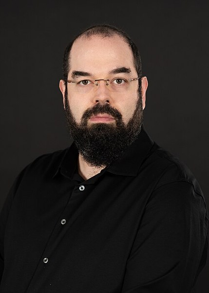
2010年代中期，牛津部分哲学研究群体与加州湾区的"理性主义社区"（以艾利泽·尤德科夫斯基 Eliezer Yudkowsky 创立的机器智能研究所 MIRI 及 LessWrong 论坛为代表）在通用人工智能风险问题上产生深度交集。两部著作在这一转向中起到了关键的思想催化作用：
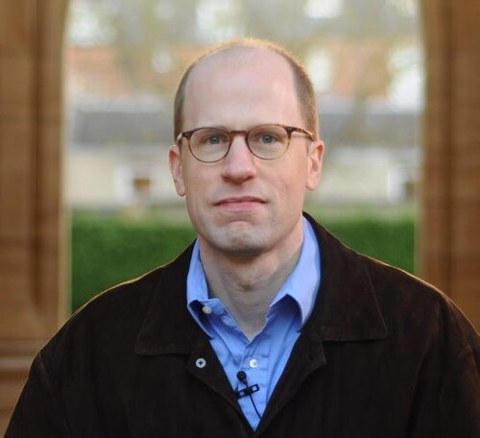
尼克·博斯特罗姆（Nick Bostrom）《超级智能》（2014）与《天文级浪费》（2003）：牛津人类未来研究所（FHI）创始人博斯特罗姆早在2003年发表论文探讨人类若未能跨越技术瓶颈走向星际与数字未来所损失的巨大潜能（文中在极端天文计算假设下提及 10⁵⁴ 量级）；
2014年出版的《超级智能》进一步系统提出正交性论题（Orthogonality Thesis，智能水平与终极目标相互独立）、工具趋同（Instrumental Convergence，如自我保护与资源获取子目标，"回形针最大化器"思想实验）及价值加载问题，成为当代 AI 对齐（Alignment）研究的重要理论源头。
托比·奥德（Toby Ord）《悬崖》（The Precipice, 2020）：奥德将1945年核时代开启后的数个世纪定义为人类面临自我毁灭风险的"悬崖期"，并在书末表 6.1 中对未来100年各类"生存灾难（Existential Catastrophe，指人类物种灭绝或文明潜能不可逆的永久崩溃，不一定全部等同于生物学灭绝）"给出了数量级估算。
奥德2020年著作表6.1及2024年回顾文章（来源 S10）给出如下主观风险估算：
| 风险大类（规范分类） | 具体风险来源 | 未来100年导致生存灾难的个人数量级估计（Ord 2020） | 口径限定与严谨说明（依据来源 S10） |
|---|---|---|---|
| 恒星爆发（超新星等） | 约 1 / 1,000,000,000 | 属天体物理背景极低概率估算 | |
| 小行星或彗星撞击 | 约 1 / 1,000,000 | 现代天文观测已识别绝大部分大型近地天体 | |
| 超级火山喷发 | 约 1 / 10,000 | 自然风险小计约为 1 / 10,000；以下疫情及人为风险另列。 | |
| 自然起源的大流行病 | 约 1 / 10,000 | Ord 原著将其列在自然风险小计之后；人类活动可放大传播与毁灭性后果，不能按病原体起源重新归类。 | |
| 核战争 | 约 1 / 1,000 | 估算的是导致人类灭绝或文明永久无法重启的极端概率 | |
| 气候变化 | 约 1 / 1,000 | 同上，仅针对"文明潜能不可逆永久毁灭"，非一般气候灾难 | |
| 其他环境破坏 | 约 1 / 1,000 | 与核战、气候变化同属千分级主观量级估计 | |
| 其他已知人为风险 | 约 1 / 50 | 涵盖复合型系统风险 | |
| 未预见的人为风险 | 约 1 / 30 | 针对尚未进入视野的技术盲区 | |
| 工程化大流行病（合成生物风险） | 约 1 / 30 | 生物技术门槛下降带来的非自然病原体风险 | |
| 未对齐人工智能（Unaligned AI） | 约 1 / 10（10%） | 必须严正限定：这是奥德本人的主观数量级判断，既不是经过统计验证的客观概率，也不直接等同于物种灭绝概率，更不能理解为某项单一监管干预就能削减10个百分点的风险 | |
| 未来100年总生存灾难量级 | 约 1 / 6（约 16.7%） | 并非各项数字的简单算术相加（独立事件联合概率与相关性考量）；奥德2024年复盘调整了部分趋势方向，但未发布新数值表（来源 S10） |
随后，威廉·麦卡斯基尔于2022年出版《我们欠未来什么》（What We Owe the Future），系统推广了长期主义（Longtermism）理念，在学术与公共讨论中区分了"弱长期主义"（长期未来是重要的道德考量）与"强长期主义"（对遥远未来的影响是当代行动道德价值的核心决定因素）。
同时，EA 社区也讨论了名为"为捐而赚（Earning to Give）"的职业路径策略——鼓励具备高收入潜力的个体通过金融、科技等高薪行业积累资金定向捐赠，但正如第二章将详述的反证所示，80,000 Hours 官方职业指南明确强调了"不得造成伤害"的道德约束（来源 S11）。
纵览：半个世纪的思想与机构时间线
思想谱系与时间轴
1972 辛格：饥荒、富裕与道德
1984 帕菲特：理与人
2003 博斯特罗姆：天文级浪费
2007 GiveWell
2009 Giving What We Can
2011 80,000 Hours
2014 超级智能
2020 悬崖
2022 我们欠未来什么；FTX破产
2023 LTBT与OpenAI罢免
2025 OpenAI资本重组
2026 Anthropic IPO及监管分化
从计算到权力，中间缺了什么？
宗教的回声：一种社会学假说
在文化社会学视角下，不少学者与评论者注意到 EA 2.0 长期主义在修辞与心理结构上与传统宗教救赎叙事存在某种解释性结构类比（分析假说）：例如富裕阶层的道德焦虑对应原罪感、Giving What We Can 的 10% 捐赠承诺类比什一奉献、未对齐 AGI 灾难类比末日启示、星际未来繁荣类比千年王国。
必须明确的是：这只是一种用于辅助理解硅谷亚文化吸引力的社会学假说，并非经过实证调查证明的历史因果或所有 EA 参与者的真实心理动机。 未来若要验证这一假说，需要依赖 EA 社区年度参与者问卷调查、组织传播史及大量非宗教背景参与者的反例对照，而不能简单贴上"硅谷隐秘宗教"或"盎格鲁-撒克逊基因"的决定论标签。
数学的边界：概率并不授予权力
对于长期主义的期望值框架 EV = P × V（事件概率 × 未来文明价值），真正具有学术价值的批判并不是否定数学或成本效益分析本身，而是揭示当模型输入参数高度不可验证时，输出结果却被赋予了远超证据基础的决策权。
通过一组简单的参数敏感性思想实验即可看清其内在脆弱性（注：以下仅为说明数量级敏感性的思想实验，绝非真实 AI 风险或未来人口预测）：
若假设灾难概率 P = 10%，受影响的未来生命体数量 V = 10¹²，则期望损失为 10¹¹；
若 P 在 0.1% 至 20% 之间变动（相差 200 倍），而 V 在 10⁶ 至 10⁵⁴ 之间变动（相差 48 个数量级），期望值输出会随完全无法实证检验的主观假设发生天文级剧烈漂移。
期望值思想实验
假设参数，不是实际风险预测；概率不等于道德授权。
因此，这一框架存在三重难以跨越的哲学与决策死结：
边际杠杆缺失：公共决策与慈善配置真正需要评估的不是总风险 P，而是具体某项干预所能带来的边际风险降幅 ΔP、干预机会成本、反事实影响以及估计区间；
人口伦理与道德不确定性争议：如何定义并加总尚未出生者的效用，在规范哲学内部至今存在剧烈分歧（例如帕菲特本人提出的"厌恶结论"难题）；
概率不等于授权：即便接受未来生命价值巨大的前提，也绝无法在逻辑上直接推出"少数掌握算力或资本的精英，有权绕过民主程序与权利约束，替当代所有人决定资源的分配方向"。
当捐赠对象从当下可以观察的病人延伸至未来世代，讨论也从慈善效率走向决策权。这些思想要进入现实，还需要另一样东西：资本。
当行善遇到资本：慈善、股权与FTX
一个鼓励理性配置善款的运动，在巨额财富和金融失败面前接受了现实检验。
在剖析 EA 与硅谷 AI 实验室的资本关系时，必须建立一条不可逾越的方法论红线：慈善资助、商业股权投资、组织任职与实际控制权是四种截然不同的法律与经济关系，绝不能画上等号。 连线存在不代表共同控制，也不代表一致行动。
本章从三组核心关系切入：两代西方巨富慈善范式的演进对比、EA 核心资助网络与商业投资的交叉边界，以及 FTX 危机对 EA 生态与功利主义伦理造成的深层冲击。
2006—2013 · 财富的用途两代巨富，两种行善的时间表
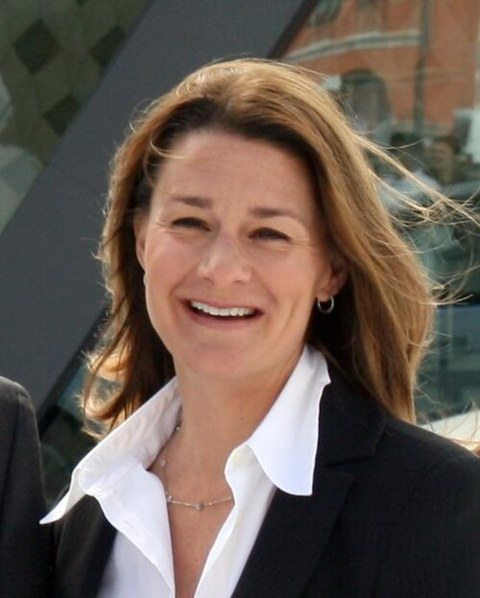
从时间线与思想传统来看，沃伦·巴菲特与比尔·盖茨并非 EA"为捐而赚"策略的产物，而是早于 EA 运动成型的现代巨富慈善范式。巴菲特于2006年宣布将大部分伯克希尔股权定向捐赠，并于2010年与盖茨夫妇共同发起"捐赠誓言（The Giving Pledge）"；
而 EA 这一名称及 80,000 Hours 关于"为捐而赚"的系统讨论则在2011–2013年前后成型。
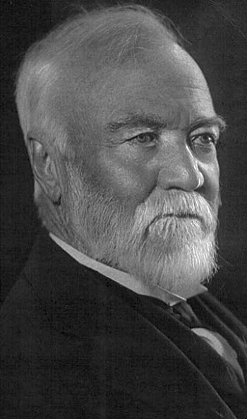
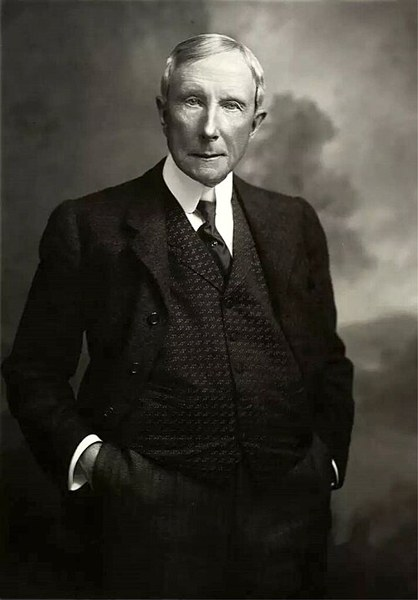
两代范式在数据量化评估上存在方法论共鸣（盖茨基金会同样高度强调疫苗与健康项目的 ROI 评估），但在底层逻辑上存在清晰差异：
盖茨基金会官方计划2045年12月31日结束运营，传统基金会也可调整支出期限。S43
| 对比维度 | 巴菲特 & 比尔·盖茨（古典实用主义 / 现代基金会范式） | 有效利他主义（EA）的"为捐而赚"策略 |
|---|---|---|
| 思想渊源 | 承袭安德鲁·卡内基《财富的福音》与洛克菲勒传统：富豪先凭商业才能创富，晚年通过大型基金会回馈社会 | 脱胎于牛津应用伦理与 80,000 Hours 边际替代率分析，讨论将职业选择本身作为捐赠资本来源的策略选项 |
| 创富与行善时序 | 先独立创业/投资积累财富，后在人生下半场大规模捐赠 | 主张部分具高收入潜力的青年从职业早期即规划高薪路径以扩大可支配捐款 |
| 重点投向 | 高度聚焦当下可观测的全球健康、疫苗、农业减贫与基础教育 | 多轨并行：既有全球健康与动物福利，也有相当比例高净值捐赠者聚焦 AI 安全与生物安全等前沿风险 |
| 约束与演进争议 | 强调稳健治理与声誉，但面临传统巨富基金会规模庞大、官僚化及代际理念分歧的讨论（2026年个别捐赠安排仍须以官方文件为准） | 官方职业指南明确强调"不得从事有害工作"底线（来源 S11），但在极端个体实践（如 SBF 案）中暴露出道德合理化风险 |
资本关系顺着钱的流向，找到不同的权力
为避免将慈善赠款与股权投资混为一谈，以下按不同关系类型拆解 EA 生态内的主要资本节点（非公开持股、税表与交易细节仅在证据足以支持时列示）：
资本关系的四种边
不同关系类型不可互换；资助不等于控制。
莫斯科维茨与图纳：慈善网络的资金中枢
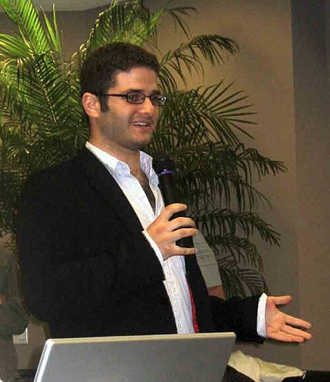
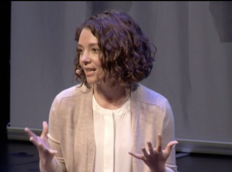
Facebook 联合创始人达斯汀·莫斯科维茨（Dustin Moskovitz）与妻子卡里·图纳（Cari Tuna）是 EA 运动迄今最具影响力的核心慈善资助者，其家族基金会 Good Ventures 与 GiveWell 合作孵化了 Open Philanthropy，并于近年更名为 Coefficient Giving。
已确认事实Coefficient Giving 长期在全球健康与福祉（包括与 GiveWell 合作的 2.76 亿美元防疟蚊帐赠款、结核病与铅污染治理，来源 S02、S03）以及AI 政策与安全基础设施（如2019年向乔治城大学 CSET 提供 5500 万美元创始赠款，来源 S27；
以及作为 Tarbell Center 2025年主要资助方，来源 S29）两大方向并重拨款。
分析推断莫斯科维茨夫妇同时在商业层面早期投资了 Anthropic（具体出资实体、投资金额、2025年初转入非营利组织时的持股估值，以及2026年11月上市当天莫斯科维茨接受《纽约时报》采访的原话引语，尚缺公开原始文件支持）。
从治理研究角度看，同一批超级捐赠者既资助 AI 政策/媒体生态、又在早期持有前沿实验室商业股权，构成值得审视的潜在利益交叉，但尚无证据证明该交叉等同于对受助机构或实验室的共同控制。
量化金融与慈善：哪些关系已经得到证明？
华尔街量化做市商 Jane Street（简街资本）以推崇概率推理与贝叶斯决策文化著称，其员工与合合伙人群体与 EA 社区存在显著的人才与文化交集。
证据不足James McClave 与 BEMC Foundation 是待进一步穿透的资本节点。个人实益持股、基金会税表及具体拨款缺乏充分原始凭证，本文不披露未经核实的财富估算。早期投资不等于 IPO 时持股，需核查稀释及减持。
2022 · 转折FTX崩盘：道德理想遇到内控失败
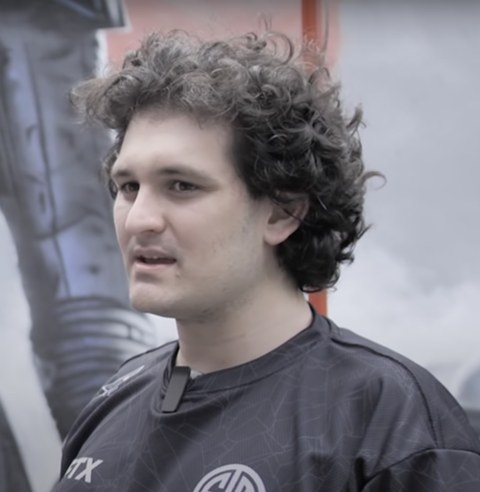
2022年11月，曾以 EA"为捐而赚"明星代言人形象活跃于欧美舆论场的山姆·班克曼-弗里德（Sam Bankman-Fried, SBF）及其创立的加密货币交易所 FTX 与量化关联公司 Alameda Research 轰然崩盘。
依据美国司法部 2024年3月28日官方判刑公告（来源 S12），SBF 因策划多起重大欺诈阴谋被判处 25年联邦监禁，并被下达 110亿美元资产没收令【已确认事实】。
2026年6月12日第二巡回上诉法院维持地区法院判决（24-961-cr）。此不代表所有后续救济程序终结。S41
关键反证：EA 并非 SBF 犯罪的必然决定因素 不能仅凭个人对道德理论的认同解释犯罪行为。EA 运动的核心职业指导机构 80,000 Hours 在其官方《Earning to Give》指南中明确提出严格的"不造成伤害（Do No Harm）"红线，公开反对以"为了更大的善"为借口从事违法、欺诈或损害社会公共利益的职业与行为（来源 S11）。
这一直接反证表明，SBF 的行为公然违背了 EA 主流机构的明文伦理规范。
因此，对 FTX 危机与 EA 的关系，必须严格拆解为三个独立但相互作用的归因层级：
个人层面（直接犯罪主因）：SBF 个人极端的风险偏好、漠视法律底线以及主导挪用客户资金的刑事犯罪行为（司法判决已确认，来源 S12）；
企业治理层面（直接崩盘机制）：FTX 与关联交易实体 Alameda Research 之间彻底缺乏客户资产隔离机制、独立审计委员会与基本财务内控，叠加高杠杆投机失控；
EA 组织与生态层面（放大器与道德合理化漏洞）：EA 社区在面对百亿级超级金主时暴露出的尽职调查严重缺位、声誉光环效应（Halo Effect）、对单一巨额捐赠源的财政依赖，以及极端后果主义话术被个别野心家挪用为"道德合理化工具"的脆弱性。
FTX 破产亦造成非营利机构的资金追回风险。Effective Ventures UK 与 US 在2024年1月公布和解安排：两实体合计向破产财产支付26,786,503美元，相当于2022年从FTX及FTX Foundation收到的全部资金。
这是机构自述的和解支付金额，不等同于法院认定受赠机构参与欺诈。EV和解公告
80,000 Hours 官方回顾确认其于2025年4月1日完成分拆，5月28日公布独立运营。组织拆分反映治理结构的变化，不宜单独归因于FTX事件。S42 / S47
2024—2026 · 反事实账本如果那笔股权没有卖掉
SBF 案留给资本市场最具戏剧性的注脚，是 FTX 破产财产对 Anthropic 早期股权的处置。以下依据公开法院出售程序及同期市场报道（来源 S13–S15）拆解历史交易、处置机制和反事实价值：
投资时间与持股比例：依据路透社援引的法院披露文件（来源 S13），FTX 系于 2021年 向 Anthropic 投入 5亿美元，2024年2月破产清算申报时披露持股比例约为 7.84%【已确认事实】。具体认购主体、轮次与交割细节需进一步查证原始投资协议【证据不足】。
破产法处置程序：根据法院出售程序文件 Doc 7908（来源 S14），破产法院授权并批准债务人财产通过一笔或多笔交易出售全部或部分 Anthropic 股权，而非美国《破产法》第11章普遍存在"强制立即清空所有未上市股权"的硬性条文；
最终分批出售是基于债权人足额现金赔付方案、估值波动风控与法院批准程序共同决定的商业处置结果。
买家明细核验边界：2024年分批出售的总价与具体股份数仍需逐笔法院交割记录核实，部分买家隐含价格并不一致。以下敏感性测试以明确假设输入，未核买家数据不作事实公开。
反事实估值敏感性测算（严禁等同于"已实现收益"或"管理人造成的损失"）
为科学评估这笔股权在2026年11月 Anthropic 上市前后的市值波动，下表基于"假定拆股前为 4450 万股、经 10 拆 1 转为 4.45 亿股、原始投入 5 亿美元、2024年处置额 13.4 亿美元"这一未完成逐笔核验的假设输入口径，结合已获路透社确认的三个真实市场价格锚点（来源 S16–S18），给出清晰的事后反事实（Ex-post Counterfactual）情景敏感性测算：
(重要方法论限定：以下数值仅反映"假设自 2024 年起零出售、零稀释、零类别折价且忽略资金时间价值与破产锁定期限制"的纯理论反事实情景，绝非已实现盈利，更不代表破产管理人给债权人造成了同等金额的损失；且 4450万股仍待原始交割核证；424B4已确认10比1拆股。)
| 价格情景锚点 | 参考股价（美元） | 价格来源与性质 | 理论反事实总价值（= 4.45亿股 × 股价） | 相对原始投入（5亿美元）理论倍数 | 相对2024年处置额（13.4亿美元）理论倍数 | 与2024年处置额的理论差额（= 反事实价值 − 13.4亿） |
|---|---|---|---|---|---|---|
| IPO 发行定价 | $83.00 | SEC Form 424B4 最终发行价（来源 S18） | 369.35 亿美元 | 73.87 倍 | 27.56 倍 | 355.95 亿美元 |
| 上市首日收盘（2026-11-19） | $97.17 | 路透社市场报道收盘价（来源 S16） | 432.41 亿美元（精确值 432.4065 亿） | 86.48 倍 | 32.27 倍 | 419.01 亿美元 |
| 破发盘中报价（2026-11-24） | $76.60 | 路透社报道盘中跌破发行价报价，非收盘价（来源 S17） | 340.87 亿美元 | 68.17 倍 | 25.44 倍 | 327.47 亿美元 |
FTX反事实估值
以假设4.45亿股、处置额13.4亿美元计算。拆股已核实，原始股数仍待查，非实际损失。
这组跨度近百亿美元的五日价格波动（从首日收盘 97.17 美元迅速回落至 11 月 24 日盘中 76.60 美元跌破发行价）本身，恰恰反向印证了破产管理人在高不确定性前沿科技资产上追求确定性现金变现的现实商业逻辑。
FTX的故事揭示了善意无法取代财务纪律。接下来，我们要看的是另外一种尝试：不是依靠捐赠者的自律，而是直接把公共使命写进公司治理结构。
谁有权叫停一家万亿公司？
OpenAI的董事会危机与Anthropic的目的信托，是两种不同的制度实验。
在现代公司法与风险投资史上，OpenAI 与 Anthropic 提供了两个极具研究价值的制度样本：它们试图在特拉华州公司法框架内，为可能产生重大社会外部性的前沿技术企业，构建超越传统"股东短期回报最大化"的治理约束。
制度的起点先弄清法律给了谁什么权力
在分析两大实验室的架构创新前，必须避免将特拉华州公司法过度漫画化。
传统营利公司并非"任何时刻都必须最大化短期股价"：虽然2010年特拉华州衡平法院在 eBay Domestic Holdings, Inc. v. Newmark 一案中裁定，传统营利性公司董事不能在对抗少数股东的反收购措施中公然宣称完全无视股东经济利益而只服务于社区公益，但该案的特定司法背景是针对反收购防御措施的增强审查（Enhanced Scrutiny）。
在日常商业经营中，特拉华州法下极其强大的商业判断规则（Business Judgment Rule, BJR）赋予了董事会极大的裁量空间——只要不存在利益冲突且履行了审慎知情义务，董事完全可以为了长期可持续发展或声誉稳健而牺牲短期利润。
特拉华州公益公司（PBC）的法定义务不是"安全自动压倒一切"：依据《特拉华州普通公司法》第八编第15分章（DGCL §§361–368，来源 S22），PBC 董事依据 DGCL §365 负有的法定义务是"平衡（Balance）"三方利益：（1）股东的财务利益；
（2）受公司行为实质影响者的最佳利益；（3）公司章程载明的特定公共利益。这意味着，即便在 PBC 架构下，AI 安全也并非在法律上无条件凌驾于股东与债权人利益之上；同时 DGCL §367 对针对 PBC 平衡义务提起的股东派生诉讼设置了严格的持股比例诉讼资格门槛（来源 S22）。
正是在这一法律张力下，OpenAI 与 Anthropic 分别走出了两条迥异的治理演化路径。
2023年11月五天之间：一项董事会决定的命运
罢免为何发生？四种解释并存
2023年11月17日，OpenAI 原非营利董事会四位成员投票罢免首席执行官山姆·奥特曼（Sam Altman），随后在微软施压及大量员工联名抗议下，奥特曼于数日内复职，原董事海伦·托纳（Helen Toner）与塔莎·麦考利（Tasha McCauley）退出董事会。
2024年3月8日，OpenAI 公布了委托律所 WilmerHale 开展内部调查的公开摘要（来源 S24）【反证】：该摘要明确指出，前董事会罢免奥特曼的起因是"前董事会与奥特曼之间关系的破裂及信任丧失（a breakdown in the relationship and loss of trust）"，并明确否认罢免是由"产品安全或安保担忧、开发速度、OpenAI 的财务状况，或向投资者、客户及商业伙伴所作陈述"所引发（来源 S24）。
当然，作为严谨的独立研究者，同样不能无条件全盘采信 WilmerHale 摘要：完整调查报告从未向公众公开，该摘要是由奥特曼回归后重组的新 OpenAI 董事会对外发布的当事方文件，天然带有机构公关与法律风控色彩；
而且在公司治理实务中，围绕"安全审查流程沟通不坦诚"的信任破裂，在功能上往往与制度性安全治理难以完全切割。另一方面，托纳事后在公开访谈中关于信息黑箱（如 ChatGPT 发布前未获提前通知）、隐瞒 OpenAI Startup Fund 利益及安全流程误导的控诉，亦属于当事方单边陈述。
因此，对2023年 OpenAI 危机唯一客观的学术处理方式，是并列呈现四种竞争性解释框架，而非将其定案为单一派系政变：
治理与安全理念冲突假说：非营利安全使命与加速商业化之间的深层张力（以部分前董事背景及公司初创章程为线索）；
CEO 与董事会信任破裂假说：WilmerHale 审查公开摘要的核心定论（来源 S24）；
信息不对称与董事会监督失灵假说：独立董事缺乏有效内部信息渠道与常设合规支持，导致沟通摩擦升级为极端罢免；
人力资本与战略资本实际控制力假说：在前沿 AI 行业，核心科研团队的集体行动与算力/资本伙伴（微软）的现实杠杆，实质上凌驾于非营利母公司的形式表决权之上。
两年后，权力与股权重新连接
依据 OpenAI 官方结构说明（2025年10月28日重组及后续更新，来源 S25）【已确认事实】，OpenAI 在与加州及特拉华州总检察长沟通后完成了重大资本重组：原非营利实体更名为 OpenAI Foundation（OpenAI 基金会），运营业务重组为特拉华州公益公司 OpenAI Group PBC，取消了早期复杂的"利润上限（Capped-Profit）"结构。
在新的架构下，OpenAI 基金会继续保留任命和撤换 PBC 董事会的控制机制，同时持有 OpenAI Group PBC 相当比例的常规股权及与未来估值挂钩的经济权益，使其慈善资金规模与商业实体的长期市值增长直接相连（来源 S25）。
分析推断基金会的慈善资产规模确实与商业公司估值形成正向绑定，可能降低其采取激进反商业措施的意愿；但另一方面，如果重大安全事故会导致公司遭遇毁灭性监管惩罚或声誉崩塌，那么维护长期安全与保全基金会股权价值之间亦存在利益一致的空间。
2026年11月83美元一股：从哲学实验到资本市场
发行所得究竟进了谁的账户？


.jpg){kind=link}


.jpg){kind=link}


.jpg){kind=link}


.jpg){kind=link}

| 发行与估值维度 | 精确股数 / 口径 | 金额（美元） | 资金归属与口径说明（来源 S16–S20） |
|---|---|---|---|
| 发行价与上市标识 | Nasdaq 代码 ANT，2026年11月19日挂牌 | $83.00 / 股 | 首日收盘 $97.17（来源 S16）；11月24日盘中一度跌破发行价至 $76.60（来源 S17）；媒体按完全稀释口径估算发行估值约 1.5万亿美元（非基本流通市值） |
| 基础公开发行合计 | 980,000,000 股 | 813.40 亿美元 | 9.8亿股 × $83（公开发行基础总成交额，非全部归属公司） |
| — 其中：公司新发股（基础） | 956,351,354 股 | 793.7716 亿美元 | 计入公司毛融资 |
| — 其中：原股东售股（老股） | 23,648,646 股 | 19.6284 亿美元 | 归属售股股东，不进入公司现金账户 |
| 超额配售权（全额行使） | 147,000,000 股（公司新发） | 122.01 亿美元 | 交割公告确认全额行使（来源 S20） |
| 公开发行最终总计 | 1,127,000,000 股 | 935.41 亿美元 | 其中公司累计新发公开发行 1,103,351,354 股，公开发行毛融资 915.7816 亿美元 |
| 同期战略私募（Class N） | 313,253,007 股（无投票权） | 约 260.00 亿美元 | 认购七方：AMD、Broadcom、Google、Micron、Microsoft、NVIDIA、TSMC Partners（来源 S18、S20） |
| 公司合计毛融资 | 公开发行新股 + 同期私募 | 约 1,175.78 亿美元 | 915.7816 亿 + 260.00 亿 |
| 公司合计预计净融资 | 扣除承销费与预计发行费用后 | 约 1,170 亿美元 | 招股书预计净额（非经审计的实际最终到账数，来源 S18） |
9009亿美元：合同，不是全部债务
9009亿美元是长期采购和租赁承诺总额，并非资产负债表中已确认的全部负债；未来12个月预计付款也不代表当期到期债务。
依据 SEC Form 424B4 最终招股书 MD&A（Liquidity and Capital Resources / Contractual Obligations）及财务附注（来源 S18），必须精准区分"表外合同承诺"与"已确认会计负债"，并完整纳入流动性反证【已确认事实】：
合同承诺总额与附条件拆分：截至2026年9月30日及之后签署的采购与租赁等合同承诺合计约 9009亿美元，涵盖短期承诺及尚未开始的租赁，与资产负债表上已确认的会计负债并非同一口径。
其中 1862亿美元（占比 20.67%） 明确附带先决条件或启动前终止权；其余 7147亿美元（占比 79.33%） 为算术差额，同样不可简单等同于无条件、不可撤销债务（部分合同包含对手方交付违约救济等保护条款）。
此外，公司另有未固定金额的算力与基础设施安排，估计支出区间为 1500亿至1750亿美元（属估算范围，不可直接加总为刚性债务）。
支付期限结构：在 9009 亿美元中，预计截至 2030年底 支付 4516亿美元，余额 4493亿美元 绝大多数分布于 2031至2045年 漫长周期内。在2026年9月30日后的未来12个月内，预计付款为 707亿美元，其中 42亿美元 涉及先决条件或启动前终止权，其余 665亿美元 亦非已到期违约债务。
关键合同条款：最终招股书（来源 S18）披露，Anthropic 与 Microsoft 的合同周期为2026年11月至2033年6月，最低承诺 472亿美元、最高 492亿美元（该合同与实际使用量无关，但保留特定违约及未交付批次救济条款）。
对于 Nscale 等其他算力伙伴，必须严格区分"最高承诺上限"、容量交付验收条件及对手方融资前提（来源 S18）。其他合同的最低义务、最高支出、交付和终止条件须分别判断。
核心反证：充沛的流动性安全垫截至2026年9月30日，最终招股书披露 Anthropic 账面持有现金及现金等价物 956亿美元、短期投资 363亿美元，连同可用信贷额度 148亿美元，合计流动性达 1466亿美元（四舍五入）；
且2026年前九个月经营活动现金流已录得正 66亿美元（来源 S18）。现有披露不足以支持立即发生流动性危机的判断；9月末流动性与11月融资并非同一时点，不能机械相加为当前现金。
从算力采购到现金回收
算力采购承诺：期限与条件
主要合同对手方
以上合同口径不能直接相加，也不等于供应商锁定收入。来源：424B4 Contractual Obligations。前九个月收入332.42亿，按量付费263.06亿，占79.13%，第三季度收入170亿。
9月底流动性1466亿与IPO预计净融资1170亿相加为静态备考2636亿，并非当前真实现金余额。融资能力、经营现金流与FCF必须区分。
算力现金流压力测试
教学模型，不是自由现金流或偿付能力预测；收入年化起点680亿。
从商业约束角度看，【分析推断】Anthropic 庞大的长期算力采购与租赁承诺，并不等同于即将违约的刚性债务，但确实构成了极高的经营杠杆（Operating Leverage）与战略路径依赖。
它显著抬高了管理层"主动延迟训练、暂停部署或大幅缩减算力扩张"的边际机会成本，而这种压力的真实烈度，取决于合同生效与退出条件、巨额现金储备消耗速率以及 Token 变现的增量毛利转化效率。
从买方 AI 资本周期（AI Capital Cycle）视角，监控其长期偿付能力的核心传导链条是：算力交付验收 → 模型使用率 → Token 变现 → 增量毛利 → 现金回收 → 长期合同履约能力（并同步对照增量 ROIC 与 WACC）。
以下提供一个用于理解参数敏感性的简化教学框架（注：本表绝非自由现金流 FCF 预测或偿付能力评级，未计入未纳入合同的 CapEx、营运资本、税费与融资流，正式投研模型须构建完整现金流桥接并排除费用重复计算）：
若以最新季度营收 170 亿美元（424B4已确认）对应年化起点 680 亿美元为基准，设未来 12 个月相对年化起点的营收增速为 g（测试区间 -50% 至 +200%），R = 680 × (1 + g)；
设未来 12 个月 707 亿美元合同预计付款中计入经营现金支出的比例为 f（测试区间 0% 至 100%），C = 707 × f；设其他非重叠假设支出为 O（0 至 500 亿美元）；
简化差额 B = R − C − O：在示例情景 g = 50%、f = 50%、O = 30 亿美元下，R = 1020 亿、C = 353.5 亿，简化差额 B = 636.5 亿美元。不能以此推断内部造血能力或实际偿债能力。
2023—2026 · 权力结构一股T类股，四个董事席位


LTBT 权限及特别程序
依据424B4：指定T董事任免/指定变更须由1名T类、2名非T类董事组成的提名治理委员会多数同意。15天未同意且信托未撤回，可交Class E表决；已发行E股过半数构成法定人数，投票多数批准。
有因撤换另有程序。授权席位与在任席位须分开。Class F持续创始人少于3人满90天触发450天过渡期；过渡后F及E类股赎回。信托条款修改需按不同情形满足董事会及受托人80%批准或创始人、E类与A类股东的组合门槛；
具体法律条款以原文为准，50.1%一般投票权不等于单方面拆除信托的权力。S18
治理权力：形式权力和实际席位
授权多数不等于实际在任多数；指定T类董事的任免有委员会及Class E投票程序。来源 S18。
严格区分授权席位、实占席位与两类表决权：LTBT 持有唯一一股几乎无经济价值的 Class T 股，享有在公司 7 个法定授权董事席位中选任及罢免 4 席的机制；七位联合创始人通过 Founder LLC 持有唯一一股 Class F 股，在一般股东大会事项中享有 50.1% 综合投票权，并与 A 类等其他股东共同参与其余 3 个非 T 类董事席位的选举（来源 S18、S21）。
必须严格区分法定授权席位与当前实际在任席位、信托受托人与公司董事、以及董事会表决权与股东会表决权。
第 4 席特殊 T 类董事的真实裁决主体是 Class E 持有人，而非泛指"全体员工"：对于 4 个 T 类席位中的特殊第 1 席（即决定多数的关键席位），其提名、无故罢免或指定变更须事先征得公司提名及治理委员会（Nominating and Governance Committee）同意；
若未获同意，可提交给 Class E 投票权持有人表决（适用法定人数与多数票规则，且 LTBT 亦保留撤回提名的权利）（来源 S18）。
董事任免权不等于对每次模型发布的一票否决权：LTBT 受托人并不直接绕过公司治理程序干预日常模型研发或逐次发布审批。实质运营监督取决于董事会下设安全与风险委员会章程、负责任扩展政策（RSP，官方版本可公开追踪，来源 S26）以及内部授权矩阵。将风险委员会等同于无条件"紧急刹车机构"属于过度简化。
"全人类"并非自动拥有诉权的信托受益人：与传统慈善信托不同，12 Del. C. §3556 下的非慈善目的信托不存在可自行提起诉讼的传统财务受益人（来源 S23）。其履职监督依靠信托文件中指定的执行监督人（Enforcers）或衡平法院救济机制；
LTBT 完整信托协议原文未向公众披露，这意味着外部公众无法核验受托人问责细节。
治理核心张力：Anthropic 架构真正深刻的制度命题在于——公司公开宣称服务的对象（全人类长远利益），与法律上真正拥有有效诉权和问责机制的主体（特定股东、委员会及非公开信托框架下的执行监督人），在制度设计上并不完全重合。
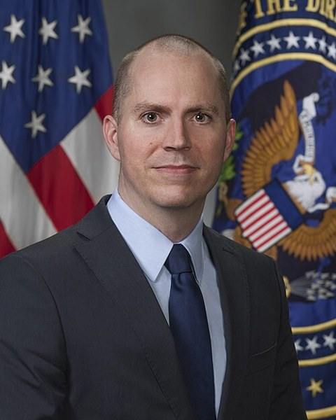

受托人与董事的职责不同。Anthropic的信托说明列明2023年初始受托人及后续变动；公司披露的任职起始日与任命公告日期未必一致，应分别记录。2026年10月引入物理学家Christopher Stubbs，也构成“成员一律商业化”的反例。
治理人员的迁移伯南克来了，信托改变了吗？
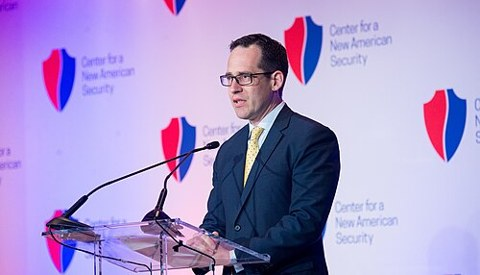

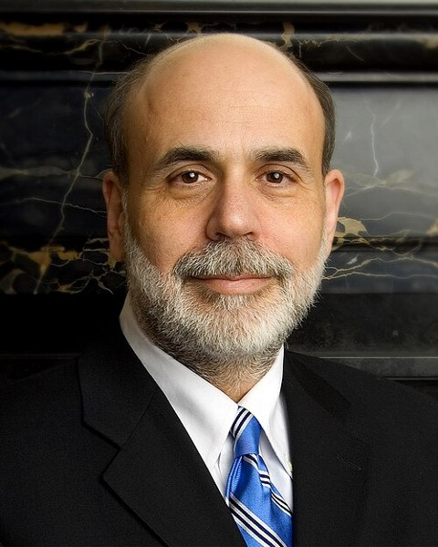

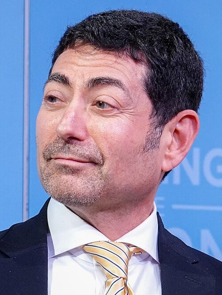
.jpg){kind=link}
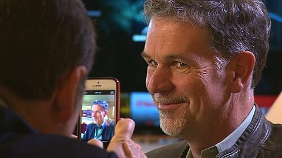

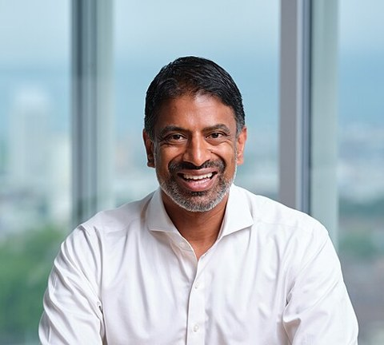

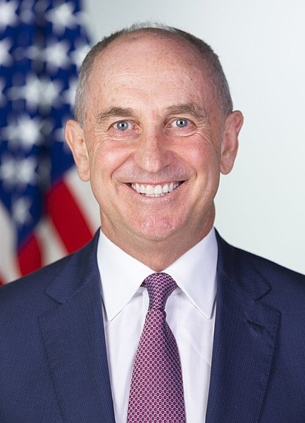

与受托人名单分开观察：这四位是公司董事，而不是因姓名出现在治理结构图上就成为信托受托人。T类董事与非T类董事的任免渠道不同；董事履历本身不是对公司未来安全决策的证明。
在制度比较中，仅凭人员履历更替绝不足以定性安全机制已经失效，必须将两个竞争假说并列置于检验框架之下：
| 维度 | 竞争假说 A：资本驯化与使命漂移（Capital Taming） | 竞争假说 B：万亿上市公司的治理专业化（Governance Professionalization） |
|---|---|---|
| 核心逻辑 | 随着公司估值升至万亿级、承担巨额长期算力承诺并深陷商业竞争，早期高度坚持安全优先的 EA 专家逐步退出，被更习惯增长、市值管理与华盛顿现实政治的商界建制派取代。 | 一家募资逾千亿美元、面向全球企业和政府提供基础设施的万亿级上市公司，天然需要精通系统性金融风险（伯南克）、严苛跨国监管合规（药企 CEO 万思瀚）与大型上市公司审计风控（哈斯廷斯、利德尔）的专业董事。 |
| 方法论警示 | 履历结构向商业建制派系统性倾斜可构成值得警惕的结构性先验（Structural Prior），但不能凭身份标签直接预设其必然轻视安全。 | 具备顶级跨国药企或央行风控履历的治理专家，未必比缺乏大型组织管理经验的哲学学者更不擅长风险管控；同样，认同长期主义也不自动等价于具备卓越的公司治理能力。 |
| 决定性检验标准 | 不可凭履历下结论，必须通过真实行为事件检验：例如未来遭遇重大红队安全测试未达标时，公司是否按 RSP（来源 S26）主动推迟模型发布、是否存在未经独立审批放宽安全阈值的记录，以及发生内部利益冲突时 LTBT 是否敢于行使否决或罢免权。 |
但即使董事会的权限被精心划分，模型公司也无法独自决定技术的社会边界。接下来的问题，从股东与受托人之间，走向记者、智库、监管者和国家。
从董事会走向公共权力
资助、政策、监管与国家主权的碰撞，迫使我们重新思考技术权力如何被问责。
在公司董事会之外，EA 资助网络过去七年间在新闻媒体、政策智库与政府研究机构层面展开了广泛布局。但这一领域最容易滑向"以资金和人脉连线替代因果证明"的认知陷阱。因此，本章引入严格的五级证据阶梯，逐层厘清哪些是已证实的资助网络，哪些是合理假说，哪些则属于尚未被证明的监管俘获指控。
2019—2026 · 影响力的证据一笔赠款能改变公共政策吗？
五级证据阶梯
前两级部分得到证据支持；第三级是研究假说；后两级需更强的决策链及公共利益受损证据。
在评估私人慈善资金对公共舆论与政府政策的影响时，必须将证据严格划分为五个递增层级，严禁从第 1–2 层直接跳跃至第 5 层：
第 1 层：资金关系（赠款记录、官方致谢、税表）——部分已证实；
第 2 层：人员网络（跨机构任职、董事席位、人才流动）——部分已证实；
第 3 层：议程设置（Agenda Setting）（议题供给频率与框架侧重）——合理假说，待样本实证对比；
第 4 层：政策因果影响（法案起草记录、具体条文引用与决策采纳链）——目前证据不足；
第 5 层：监管俘获（Regulatory Capture）（公共利益受损、特定商业巨头定向获利及可验证因果机制）——未证明。
依据这一框架，分析以下关键节点：
乔治城大学安全与新兴技术中心（CSET）：2019年校方公告确认 Open Philanthropy Project 提供5500万美元创始赠款，用于非党派AI政策研究。
这证明存在资助关系，不证明资助者控制研究结论，亦不证明具体行政令由该中心推动。Helen Toner 的任职可见CSET官方人物档案。S27
塔贝尔 AI 新闻中心（Tarbell Center）与 Transformer：依据塔贝尔中心官方招聘公告、伦理准则及月报（来源 S28–S33），该机构自述累计筹资约 2000万美元，2025年多数资金来自 Coefficient Giving，并于 2026年10月5日 宣布启动 1000万美元 机构资助计划（来源 S33）【第1层已证实】。
其现行奖学金项目为约三个月专业培训 + 九个月新闻编辑部驻站（来源 S30）。在独立性方面，2026年10月20日 塔贝尔宣布旗下通讯 Transformer 将分拆为独立组织，十月月报载明计划在 2027年底前 完成分拆（来源 S31–S32）——故截至2026年11月25日，其准确状态为"已宣布分拆，完成待核验"。
【反证与实证检验要求】：塔贝尔中心在官网公开发布了严格的《伦理与标准》声明，明确资助方不干预编辑部选材与稿件内容（来源 S29–S30）。这构成必须正面呈现的反证（同时指出：机构自述独立政策亦不等同于经第三方审计的独立性证明）。
要科学检验"供给侧议程设置"假说【第3层】，必须开展对照研究——系统比较受资助记者与未受资助同行在报道主题频率、风险框架、纠错记录与媒体发布上的统计差异，并控制同期重大行业事件变量。
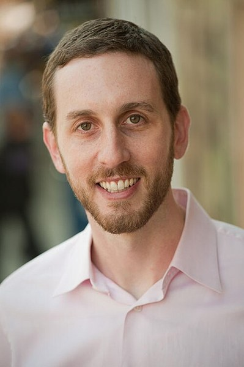

Anthropic 对 Public First Action 的 4000 万美元资助：Anthropic 官方公告明确证实分两次向公共倡导组织 Public First Action 累计捐赠 4000万美元（来源 S35）【第1层已证实】。
但绝不能将这笔议题倡导捐款直接归因于特定候选人（如斯科特·维纳在2026年中期选举中的胜选）；必须严格区分议题倡导（Issue Advocacy）与候选人竞选干预，并核查美国联邦选举委员会（FEC）公开支出明细与实际广告投放内容【第4–5层未证明】。
2025—2026 · 国家与技术从Safety到Security：监管真的消失了吗？
2025至2026年间，美国联邦与州级政策以及英国政府的AI政策重心发生变化，但官方记录也显示制度连续性：
英国与美国联邦机构更名及合作延续（关键反证）：
2025年2月14日，英国政府正式宣布将英国 AI Safety Institute 更名为 AI Security Institute，强调应对网络与国家安全威胁以释放经济增长（来源 S36）【已确认事实】；
2025年6月，美国商务部 NIST 旗下的美国 AI 安全研究所（US AISI）正式重设为 人工智能标准与创新中心（CAISI，Center for AI Standards and Innovation）（来源 S37）【已确认事实】；
重要反证机构更名并不等于安全评估工作被彻底清零。根据 NIST 官方公告，就在更名后的 2025年9月25日，CAISI 依然继续与 OpenAI 和 Anthropic 推进前沿模型安全测试与创新合作（来源 S38）【已确认事实】。
因此，更准确的政策定义是：美英联邦层面将政策目标函数、风险边界与政治优先级从广义的"通用伦理安全（Safety）"重构为聚焦网络攻防、生化核扩散与大国竞争的"国家安全与标准（Security & Standards）"，两者并非绝对互斥。
加州 2026年11月18日政策动向：严格区分"政策建议"与"已生效法律"：
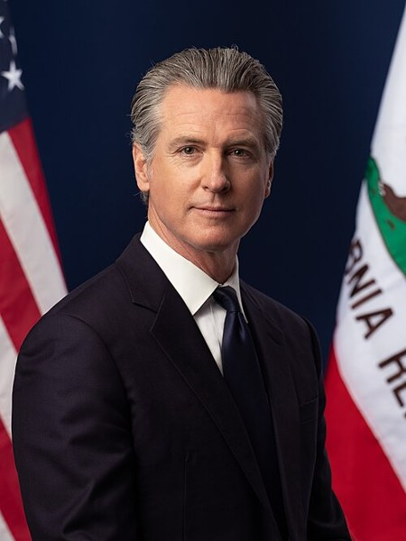
.jpg){kind=link}
根据加州州长办公室 2026年11月18日官方公告（来源 S34），加州政府确实发布了涵盖递归自我改进（RSI）管控、重大事故报告、独立第三方评估与紧急关停能力等内容的下一步监管政策建议【已确认事实】。
但必须严正区分法律效力：11月18日发布的是"政策建议（Policy Recommendations）"，并非已经生效的强制性法律；同时，加州州长办公室明确指出，2026年既有立法 SB 813 确立的是独立验证组织（IVO）的认证框架，绝不能将其与拟议中的普遍强制评估或法定关停义务混为一谈（来源 S34）。
思想争论两种批判，彼此不同的担忧
在思想舆论场，EA 近年同时面临机构收缩与来自左、右两翼的尖锐批判，但对批判者本身的论点也必须执行同等的证据审计：
牛津人类未来研究所（FHI）关闭的"时间线反证"：FHI 官方历史记录（来源 S40）揭示了一个极其关键的反证：牛津大学哲学系早在 2020年 就已经冻结了 FHI 的人员招聘与对外筹资——这比 2022 年 FTX 崩盘整整早了两年！
当然，FHI 官网属于当事方自述，仍需与牛津大学校方行政档案交叉核实；但这一时间线足以证伪"FTX 丑闻单独决定 FHI 消亡"的单因归因，FHI关闭可能涉及多因素，具体因果权重待校方证据（同样，不得仅凭 TESCREAL 论文发表日期与 FHI 关闭日期相邻便暗示因果关联）。
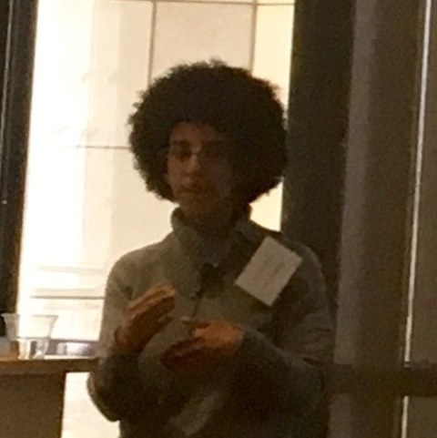
.jpg){kind=link}

左翼批判的边界（TESCREAL 论文）：蒂姆尼特·格布鲁（Timnit Gebru）与埃米尔·托雷斯（Émile P. Torres）于2024年发表在 First Monday 的同行评审论文《TESCREAL 捆绑包》（来源 S39），有力揭示了过度渲染远期科幻末日可能转移公众对当下算法歧视、劳动权益、版权与资本集中等现实伤害的注意力，并追问了超人类主义谱系与历史优生学的思想渊源。
但必须限定：TESCREAL 是一篇具有强烈批判立场的学术论证，并非学界普遍共识，更绝不能作为"所有 EA 参与者均认同优生学"的证据。
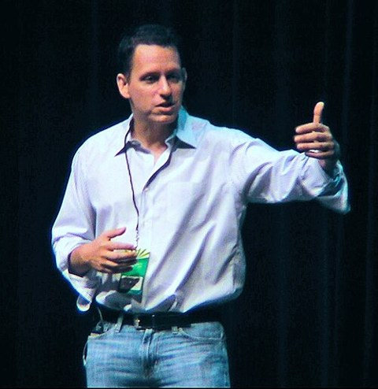

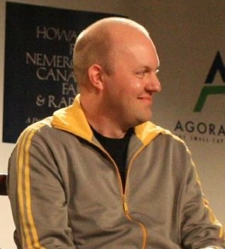

右翼批判的边界（彼得·蒂尔与 e/acc）：硅谷技术右翼（如彼得·蒂尔、马克·安德森及有效加速主义阵营）从反技术停滞、警惕监管权力扩张与大国科技竞争视角对 EA 发起反击，点中了前置强监管可能抑制创新与形成大厂合规壁垒的痛点。
但同样，蒂尔的政治神学批评也绝不能证明 EA 群体怀有建立"全球极权监管国家"的主观意图。
托管人悖论：谁授权，谁付钱，谁负责？
剥离情绪化的"阴谋论"或"世俗宗教"戏剧修辞，EA 在 OpenAI 与 Anthropic 的治理实践真正留给现代文明的遗产，是把一个尚未解决的顶级制度难题推到了台前：当私人科技企业掌握的能力可能产生远超自身边界的社会级后果时，传统产权、公司法与代议制民主是否足以约束这种权力？
托管人悖论可以拆解为四重制度矛盾：
道德合法性矛盾（Moral Legitimacy）：谁有权定义并代表尚未出生的未来世代？在缺乏公共选举授权的情况下，少数受托人或捐赠者凭什么以"全人类利益"为名行使裁决权？
资本纪律矛盾（Capital Discipline）：当一项安全决策（如推迟发布核心模型半年或拒绝高利国防/商业订单）造成数百亿甚至数千亿美元的机会成本与市值蒸发时，究竟该由谁来承担经济损失？在高度竞争的市场中，无经济利益的受托人与承担全部资本风险的股东、员工之间如何实现激励相容？
国家主权矛盾（State Sovereignty）：当私人设立的非营利基金会或目的信托所秉持的"全球普遍安全准则"，与主权国家在大国科技竞速中的"国家安全与战略领先目标"发生正面冲突时，谁拥有最终裁决权？
技术不确定性矛盾（Epistemic & Technical Uncertainty）：在连顶级科学家都无法对前沿 AI 灾难概率达成共识的条件下，究竟需要达到何种可验证的证据门槛，才足以触发暂停训练或强制关停？又该由谁对"踩刹车"的判断进行独立复核？
需要指出的是，这四重矛盾绝非 EA 或 AI 行业独有——核能管制、创新药 FDA 审批、中央银行货币政策独立性以及超大型金融清算基础设施，历史上全部面临过"专家技术权力"与"公共民主问责"之间的永恒张力。
因此，真正有价值的制度研究，不是给哲学家或资本家贴上"圣徒"或"野心家"的道德标签，而是对任何治理实体逐项审计其四类实质权限：（1）董事与高管任免权；（2）内部一手信息获取权；（3）事前否决或强制延迟权；（4）事后追责与司法救济权。
2026—2028 · 投资研究下一场制度实验：如何追踪而不是预测
监管可能走向哪四种组合？
二维政策状态矩阵
联邦监管与州级/盟友监管分别观察。内部治理韧性为独立变量。不赋予未经校准的概率。
| 州级 / 盟友 | 联邦宽松 | 联邦严格 |
|---|---|---|
| 高强度 | 监管分化：跨州合规、联邦优先权 | 监管共振：多层合规、独立评估及审计市场 |
| 低强度 | 普遍宽松：资本开支、价格战、增量ROIC | 联邦主导：统一准入、国安及产业规则 |
重大事故是可能的状态迁移触发器，不是监管升级的必要条件。G1–G7继续追踪真实行为。
治理与监管风险账本：七条持续观察线
为将本专题从静态思想史升级为可长期跟踪、可被第三方独立证伪的机构投研工具，本文确立与公司财务账本并行的《治理与监管风险账本》字段标准：主体 | 项目 | 司法辖区 | 日期 | 事件 | 原始来源 | 法律生效状态 | 权限性质（任免/信息/事前否决/事后追责）| 成本/收入/现金流影响 | 证据状态 | 反证 | 下一步触发点。
下列七项指标把治理假说转化为可以持续观察的研究记录。
LTBT 实质权力核查：逐条核验 424B4 披露的董事任免细则、Class E 特别表决门槛、Class F 日落机制及 Article XI 特别多数修改条款；追踪非公开信托协议是否披露执行监督人机制。
RSP 安全政策版本审计：持续比对 Anthropic 官网 RSP（来源 S26）及 OpenAI 安全框架的历次版本修订，监测风险阈值、暂停训练条件是否被悄然放宽。
算力合同约束动态跟踪：按季追踪 9009 亿美元采购/租赁承诺及 1500–1750 亿美元非固定安排的履约进度、先决条件触发、交付延迟救济及实际经营现金流覆盖率。
利益冲突与资本关系穿透：持续补齐核心投资人/捐赠者的实益持股披露、IRS Form 990-PF 原始税表、交叉任职与关联交易记录。
联邦与州级政府权限演进：持续追踪加州 2026-11-18 政策建议是否进入立法表决、SB 813 IVO 落地进展、NIST CAISI 评测权限变化及国会联邦优先权法案动向。
真实压力事件行为检验：记录未来发生真实安全越狱、网络攻击或模型危险能力预警时，两大实验室是否实际推迟发布、是否启动独立外部调查并公开补救——以此作为检验"资本驯化 vs. 治理专业化"的重要实证指标之一。
财务与估值传导量化：将合规固定成本、安全延迟机会成本、国防订单增量利润及算力经营杠杆统一纳入 增量 ROIC − WACC 评估模型。
回到最初的问题：谁能代表未来？
EA既提供证据慈善与安全研究的贡献，也提出私人技术权力的问责难题。四重制度矛盾及四类权限构成可证伪的治理框架。资本约束提高停机或延迟机会成本，但风险控制也可能保护长期商业价值。真正的制度比较不是谁更高尚，而是信息、制衡、救济及纠错机制是否有效。
主要来源与证据边界
官方机构声明不等于外部审计。未取得的实益持股、基金会税表、法院逐笔交易、完整信托协议及访谈不作为核心证据。
来源目录（47项）
下一条研究路径
Anthropic治理实验 — 信托、股权与算力合同。
OpenAI董事会危机 — 法律权力与组织承接。
英伟达治理与资本周期 — 治理、供应链与资本回报。
EnyaClawd
独立研究 · 从技术与制度出发，连接资本周期、风险与长期价值。